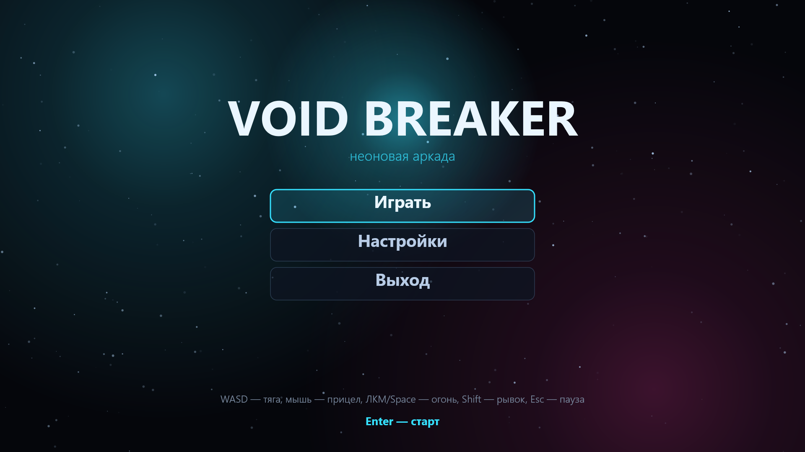
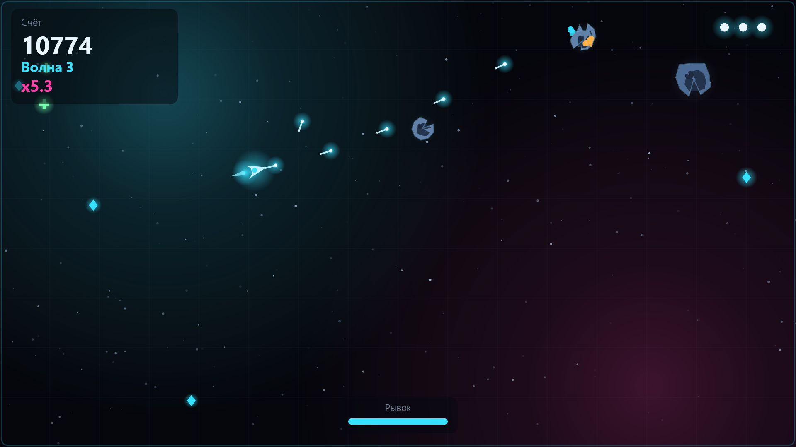
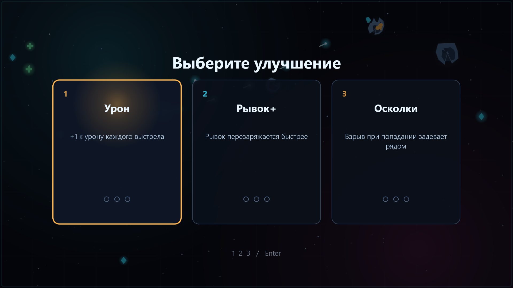
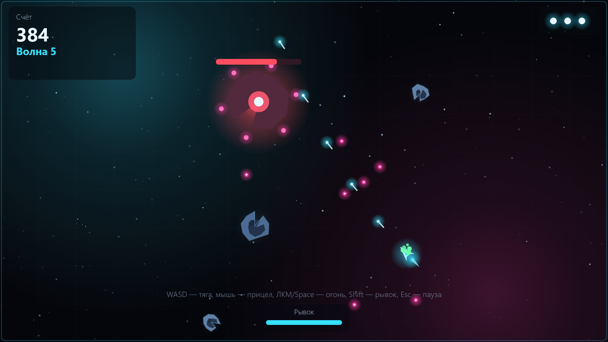
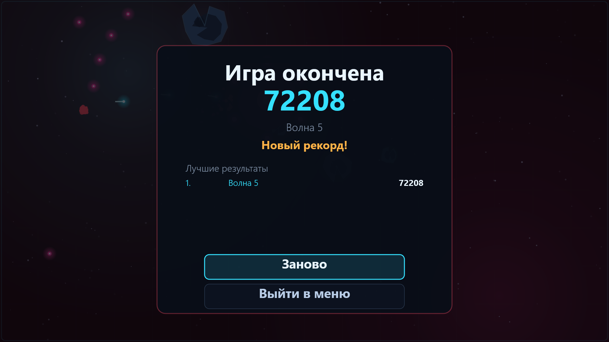

Неоновая аркада · Windows
Void Breaker
Один корабль. Бесконечные астероиды.
Быстрая аркада на одном экране: стреляйте, уворачивайтесь, выбирайте улучшения между волнами и продержитесь как можно дольше. Одна партия — 3–8 минут, игра полностью офлайн.
Об игре
Void Breaker — быстрая аркада на одном экране. Корабль у вас один, астероиды не кончаются: каждый крупный камень раскалывается на два поменьше, и так до тех пор, пока в секторе не станет пусто. С третьей волны к астероидам добавляются дроны-охотники, а каждая пятая волна выводит на арену босса.
Короткие партии, плотный темп
Один заход — 3–8 минут. Волны приходят быстрее и плотнее, скорость астероидов растёт на 4 % за волну.
Выбор на каждой волне
Зачистите арену и возьмите одно из трёх улучшений: скорострельность, урон, щит, рикошет и ещё восемь.
Комбо до ×8
Непрерывные убийства растят множитель; одно попадание его сбрасывает. Агрессивная игра приносит больше очков и больше риска.
Возможности
- Аркадный шутер на одном экране, сессия 3–8 минут
- Бесконечные волны с раскалывающимися астероидами, дронами и боссами
- 12 улучшений и выбор 1 из 3 между волнами
- Комбо-множитель до ×8 за непрерывные убийства
- Управление мышью и клавиатурой, рывок с неуязвимостью
- Локальная таблица рекордов (топ-10)
- Настройки: громкость музыки и звуков, язык, полный экран, уменьшение тряски экрана
- Полностью офлайн: без рекламы, покупок и сбора данных
Управление
Управление знакомо по аркадным шутерам: корабль держит инерцию, прицел — мышью, рывок даёт короткую неуязвимость.
| Действие | Клавиши |
|---|---|
| Тяга | W A S D или стрелки |
| Прицел | Мышь |
| Огонь | ЛКМ или Space / J |
| Рывок | Shift / Ctrl / K |
| Пауза | Esc |
| Полный экран | F11 или Alt+Enter |
| Навигация в меню | Стрелки / WASD + Enter, либо мышь |
| Выбор улучшения | 1 / 2 / 3, стрелки + Enter, либо мышь |
Скриншоты
Сделаны самой игрой в разрешении 1920×1080, без монтажа.





Трейлер
20 секунд, 1920×1080, записано в самой игре. Видеофайл отдаётся с этого же сайта.
Системные требования
| Параметр | Значение |
|---|---|
| ОС | Windows 10 версии 1809 (build 17763) или новее, Windows 11 |
| Архитектура | x64 (на ARM64 работает через эмуляцию) |
| Процессор | любой x64 с поддержкой DirectX 11 |
| Память | 4 ГБ |
| Видео | DirectX 11 (аппаратный рендер), резервный вариант — WARP |
| Диск | ~15 МБ |
| Дополнительно | клавиатура и мышь; сеть не требуется |
Где взять игру
Void Breaker бесплатна в Microsoft Store. Без покупок в приложении, без рекламы и без учётной записи.